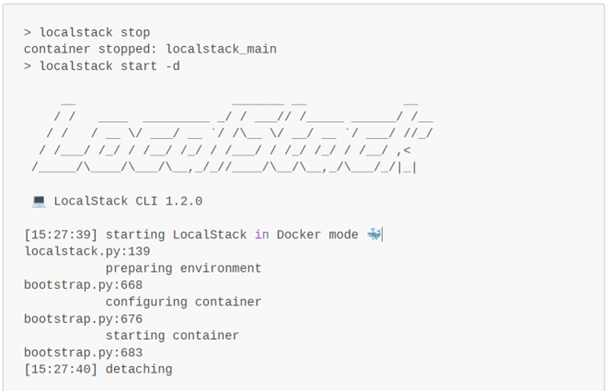
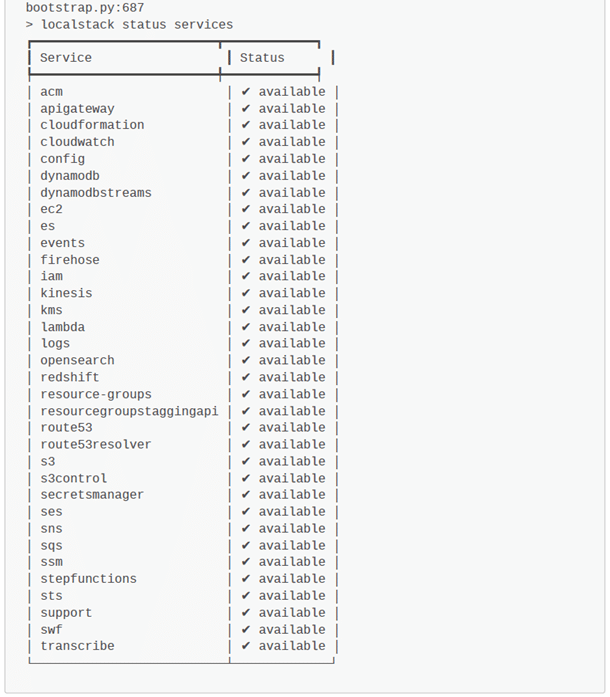
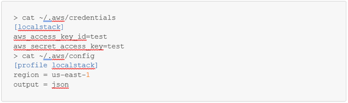

¡Buenas! Mi nombre es Adrián Sanz y me dedico a DevSecOps en Atalanta. Aparezco por aquí porque quiero compartir con vosotros una herramienta que me llamó mucho la atención cuando la descubrí: localstack. En concreto, en este artículo quiero enseñaros, para todos aquellos que no lo sepáis, cómo utilizar esta herramienta para interactuar en vuestros scripts con AWS. ¡Empezamos!
El problema
Cuando me interesé por automatizar y agilizar mi trabajo, solía usar una cuenta de AWS para probar, mejorar o desarrollar estas utilidades; sin embargo, ya no tengo accesos y tendría que usar la mía personal, pero dios sabe lo fácil que es que AWS te sorprenda a final de mes.
Así que, me puse a investigar una herramienta que conocí hace no mucho tiempo y que llamó mi atención: localstack. Localstack nos permite "emular" una versión simplificada de AWS, con la que podemos interactuar como si se tratase realmente de AWS, solo cambiando el end-point al que apuntamos en nuestro script.
Mola, ¿eh? Bueno, no todo son cosas buenas, ya que esta herramienta tiene un modelo de pago, lo que quiere decir que la versión community está limitada en algunos servicios. Por ejemplo, no puedes usar imágenes de docker como "source" para las imágenes de EC2, ni cuenta con todos los servicios o cubre todas las interacciones de estos.
Para más info sobre qué cubre localstack y si puede servirte para desarrollar, te invito a echar un ojo a la documentación oficial de localstack.
Hands on
En este caso, he implementado el uso de localstack en un script para listado de instancias EC2, llamado "lister". Es un proyecto activo y, al no tener cuenta de AWS, probar cambios puede complicarse. Es ahí donde esta herramienta muestra su utilidad.
Tras instalarlo podemos lanzar el comando localstack start -d para iniciarlo, comprobar el estado de los servicios con localstack status services o bien pararlo con localstack stop:

Ahora que tenemos todo iniciado, ¡es hora de empezar a interactuar con los servicios!
En AWS CLI
Mi script lista instancias EC2, y si no hay instancias, no hay listado, así que, primero debo crearlas. Para esto, dispones de 2 opciones: el CLI de AWS o el CLI creado por localstack, awslocal. Personalmente, prefiero el CLI oficial de AWS, pues awslocal es un wrapper alrededor del CLI oficial y no soporta muy bien todavía la v2.
Para poder interactuar con el CLI oficial tendremos que configurar un perfil de AWS y cambiar el end-point al que apuntamos en los comandos:
1. El perfil:

2. El end-point (No se puede cambiar el end-point de forma permanente, sino que se especifica en cada comando, por ese motivo yo tengo un alias para evitar escribir todo el rato lo mismo):

Con esto ya están las instancias creadas y sabemos cómo interactuar con localstack con el CLI.
En el script
Como el script debería usar por defecto el end-point de AWS real, he metido el uso de localstack con el flag -ls o --localstack. A continuación, os dejo un pequeño bloque de código:

Como se puede observar, hago uso del argumento endpoint_url (se puede usar tanto en "client" como en "resource"), y con eso ya podría probar interacciones entre mi script y AWS:


Reflexión sobre localstack
Poder emular algunos de los servicios de AWS puede ser exageradamente útil, no solo para desarrollo local (que también, de hecho, podría automatizarse la creación de un entorno local serverless en AWS con un simple script en bash), sino también para integrar con terraform y probar en CI las configuraciones antes de desplegarse en un entorno real.
Sin embargo, la herramienta queda limitada a uso local si no adquieres la versión pro, así que la sensación final es un poco agridulce.
En fin, espero que os haya resultado de utilidad todo lo que he expuesto en esta entrada. Y si solo os quedáis con una parte, ¡ya os ha servido de algo! ¡Nos vemos!